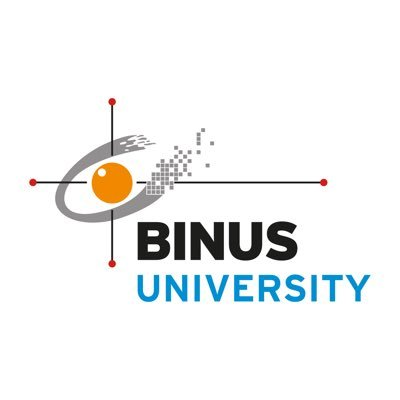
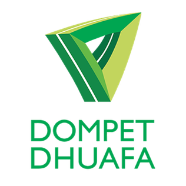
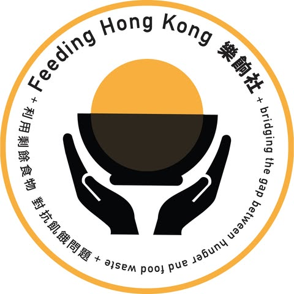
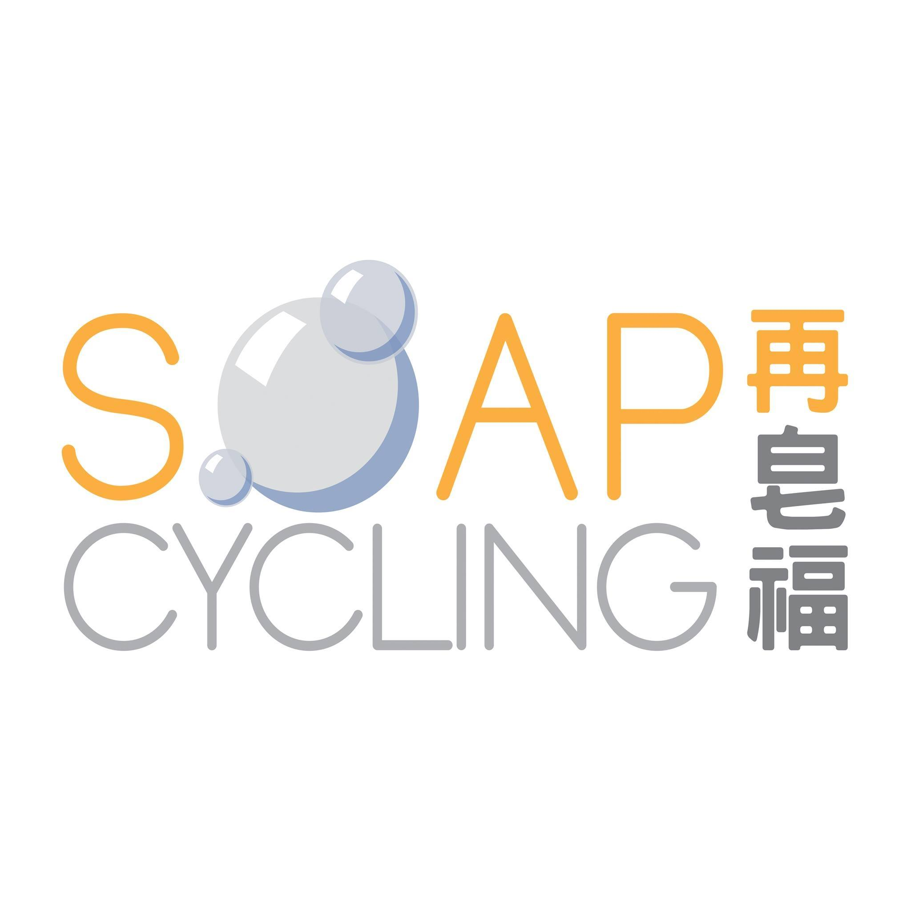

~$ whoami
Anang Ayman
I build backend systems & AI solutions.
I'm a Software Engineer specializing in backend infrastructure and machine learning, currently studying Computer Science at Sungkyunkwan University in Seoul. Previously, I engineered OIDC / OAuth 2.0 infrastructure at Digital Agri Solutions.
- English (Native · IELTS 8.0)
- Indonesian (Native)
- Korean (Conversational)
Experience
Backend Engineer Intern · Digital Agri Solutions Pty Ltd.
Engineered and deployed a containerized OIDC Identity Provider to Google Cloud Platform (GCP) using Flask and Docker, transitioning a legacy system to modern OAuth 2.0 standards within an Agile Scrum team.
Manager of Academic Events, Greater Jakarta · HIMTI BINUS University
Directed a distributed 60+ member team to execute 5 major technical initiatives, securing B2B partnerships with industry leaders like NVIDIA and Deloitte to drive 500+ student attendance.
Computer Teacher · Dompet Dhuafa Hong Kong
Developed and delivered a specialized curriculum to enhance digital literacy for 15+ students, equipping them with practical software and business marketing skills.
Featured Projects
Selected works in AI, Engineering & Research.

Custom OIDC Identity Provider
Engineered a centralized authentication system for Digital Agri Solutions. I translated business requirements into a secure OAuth 2.0 implementation, enabling Single Sign-On (SSO) for internal tools.
*Source code is proprietary. Case study focuses on system architecture and standards compliance.
View System Architecture
SignLingo AI
Architected an interactive sign language education platform as the Lead Backend and Solo AI Developer. I engineered a custom hybrid CNN-LSTM pipeline from scratch, translating complex gesture data into a full technical research paper.
Education
BINUS University · Bachelor of Computer Science 3.88/4.00
Specializing in AI & Web Development with a strong foundation in scalable software engineering principles.
Sungkyunkwan University · Exchange Student Program
Immersive exchange focusing on advanced computing electives including Mobile App Programming, Computer Security, and a comprehensive Capstone Design Project.
Delia School of Canada · High School Diploma
Ontario curriculum with distinction, focusing on Calculus and Computer Science.
Certifications
IELTS Band 8
IELTS · June 2025Leadership & Volunteering
Community impact, organizational leadership, and extracurricular engagements.
Directed a distributed 60+ person cross-functional team across 3 university campuses to bridge the gap between student talent and Tier-1 enterprise sectors.
- Executive Leadership: Appointed Project Leads for 5 major events, providing high-level strategic guidance and serving as the final authority on critical project decisions.
- Corporate Engagements: Coordinated industry partnerships and student webinars with NVIDIA, Deloitte, BCA, CIMB Niaga, and Bank Mandiri.
- Industry Representation: Acted as an organizational representative to bridge the gap between the university organization and corporate stakeholders.
Gallery

Community & Volunteering

Teaching Scholarship
BINUS University · Academic YearTeaching Scholarship
BINUS University

Digital Literacy Teacher
Dompet Dhuafa · 2022Digital Literacy Teacher
Dompet Dhuafa

Bread Runner
Feeding Hongkong · 2022Bread Rescue Volunteer
Run4Bread

Hygiene Outreach
SoapCycling · 2022Hygiene Outreach
SoapCycling